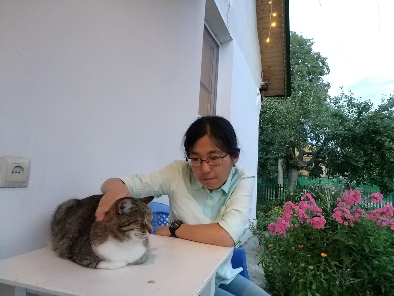
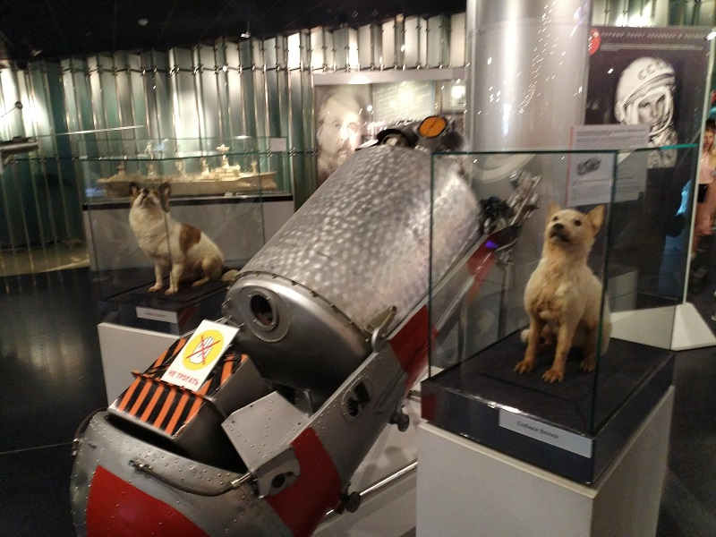

Gallery
I enjoy planting flowers in my dorm balcony and sometimes bring them to my lab.
I first traveled to the US at the age of 20, which was an unforgettable experience. I attended the Yale summer school with a scholarship offered by Neil Shen.
As a railfan, I took the K3 Trans-Siberian Railway in July 2018 and was amazed the scenery in Mongolia and Siberia.
I visited Moscow, Tula and St. Petersburg during the World Cup 2018. Of course there are no bears, and I really enjoyed the journey in Russia.
| |
 |
 |
 |
|